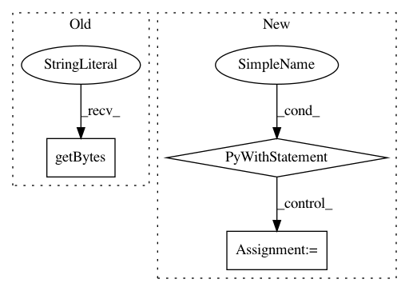

cb7c20f6ad714f0b016a874b2b06a9fbed4e0a59,tensorflow_transform/test_case.py,TransformTestCase,AssertVocabularyContents,#TransformTestCase#Any#Any#,290
Before Change
// per-key analyzers.
values = list(map(float, frequency.strip(b"\n").split(b",")))
word_and_frequency_list.append(
(word.strip(b"\n"), values[0] if len(values) == 1 else values))
expected_words, expected_frequency = zip(*word_and_frequency_list)
actual_words, actual_frequency = zip(*file_contents)
After Change
tf_utils.read_tfrecord_vocabulary_dataset(
vocab_file_path).as_numpy_iterator())
else:
with tf.io.gfile.GFile(vocab_file_path, "rb") as f:
file_lines = f.read().splitlines()
// Store frequency case.
if isinstance(file_contents[0], tuple):
word_and_frequency_list = []
for content in file_lines:
frequency, word = content.split(b" ", 1)
In pattern: SUPERPATTERN
Frequency: 3
Non-data size: 3
Instances
Project Name: tensorflow/transform
Commit Name: cb7c20f6ad714f0b016a874b2b06a9fbed4e0a59
Time: 2020-07-16
Author: zoy@google.com
File Name: tensorflow_transform/test_case.py
Class Name: TransformTestCase
Method Name: AssertVocabularyContents
Project Name: scikit-optimize/scikit-optimize
Commit Name: 44be9703a0744caf78b8b61319be0db281e91d6a
Time: 2018-04-06
Author: scott_graham@bose.com
File Name: skopt/tests/test_space.py
Class Name:
Method Name: test_space_from_yaml
Project Name: lanpa/tensorboardX
Commit Name: f4a6c738beabc312a848804e5c4d4f384919f026
Time: 2020-06-29
Author: prafullasd@gmail.com
File Name: tensorboardX/summary.py
Class Name:
Method Name: audio